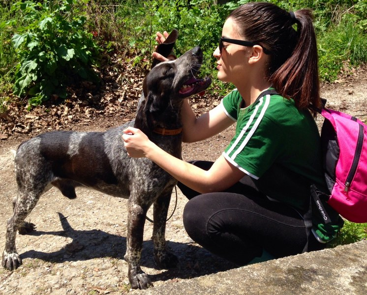

APADRINARFormá parte de los padrinos del Refugio |
|||||||||||||||||||
|
En el REFUGIO tenemos más de 200 animales (perros y gatos) rescatados de la calle, de situaciones de desamparo, maltrato, lisiados o con problemas de salud. Muchos de ellos esperan un hogar, pero muchos otros ya encontraron su hogar con nosotros, ya que en razón de su edad o de sus enfermedades es más difícil darlos en adopción. Cada uno de ellos recibe cariño, cuidados veterinarios, alimentación apropiada, vacunación, tratamiento antiparasitario, pulguicida y el espacio para que pueda estar cobijado en las noches y cuando llueve. Contamos también con una persona que juega con ellos y trabaja cuestiones conductuales para lograr una mejor calidad de vida para cada animalito, con personal de cuidados alimentarios, de cuidados veterinarios, y de limpieza de los jardines y dormis. Nos encontramos en Isla Jordan, Cipolletti, Provincia de Río Negro. |
No podríamos hacer esta tarea sin la colaboración invaluable de nuestras Madrinas y nuestros Padrinos. No obstante sabemos que podemos hacer mucho más y por eso te invitamos a que te sumes a esta hermosa tarea apadrinando a un perro o a un gato. ¿Cómo funciona? Sugerimos una colaboración mensual pero cada padrino o madrina aporta lo que puede y por eso muchos perros tienen varios padrinos para poder cubrir sus gastos. Próximamente subiremos la lista de los perros que están esperando un padrino o una madrina. |
||||||||||||||||||